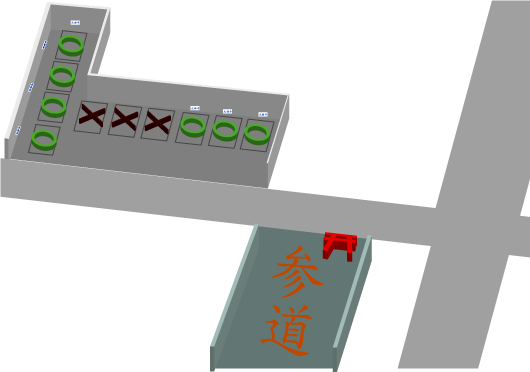

アクセス
住 所
〒980-0011 仙台市青葉区上杉4-4-50
最寄り駅
JR「仙台駅」西口
仙台市地下鉄南北線「北四番丁駅」
仙台市地下鉄南北線「勾当台公園駅」
駐車場案内
※駐車場をご利用の場合はお寺の立札のある場所にのみご駐車ください。
空きのない場合、または行事の場合は周辺のコインパーキングをご利用ください。
〒980-0011 仙台市青葉区上杉4-4-50
JR「仙台駅」西口
仙台市地下鉄南北線「北四番丁駅」
仙台市地下鉄南北線「勾当台公園駅」
※駐車場をご利用の場合はお寺の立札のある場所にのみご駐車ください。
空きのない場合、または行事の場合は周辺のコインパーキングをご利用ください。